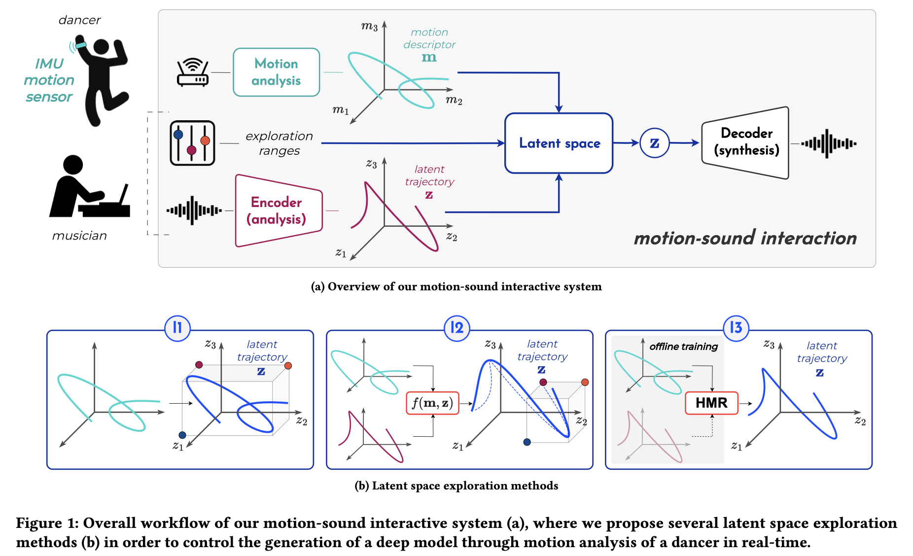

This website is still under construction and is linked to our paper submission to the MOCO'24 Conference on Movement and Computing.
In recent years, significant advances have been made in deep learning models for audio generation, offering promising tools for musical creation. In this work, we investigate the use of deep audio generative models in interactive dance/music performance. We adopted a performance-led research design approach, establishing an art-research collaboration between a researcher/musician and a dancer. In the paper, we introduce our motion-sound interactive system integrating deep audio generative model and propose three methods for embodied exploration of deep latent spaces. Then, we detail the creative process for building the performance centered on the co-design of the system. Finally, we report feedback from the dancer's interviews and discuss the results and perspectives regarding the use of Artificial Intelligence (AI) in dance-music practices.
Here, we provide further details and supplementary materials with examples on:As depicted in the Figure bellow, the dancer and musician both interact with the system. The dancer is equiped with wireless motion sensors composed of accelerometers and gyroscopes. The dancer's movements are analysed in real-time to compute a set of motion descriptors which are mapped to the latent space, depending on the different interaction methods. The resulting latent trajectories are processed in real-time by the pre-trained RAVE decoder which generates the final audio outcome.

Please, refer to the paper for further details. Here, we aim to illustrate each interaction method with examples from the performance.
We implemented our motion-sound interactive system in Max/MSP. We used R-IoT IMU motion sensors composed of accelerometers and gyroscopes with the MuBu library and the Gestural toolkit for real-time motion capture and analysis. For deep audio generation, we relied on the RAVE model which enables fast and high-quality audio waveform synthesis in real-time on standard laptop CPU, and we used the nn_tilde external to import our pre-trained RAVE models in Max/MSP.
The Max/MSP patches for implementing each of the 3 proposed interaction methods for embodied exploration of RAVE latent spaces are publicly available on our GitHub. We will also provide demo tutorial videos after the paper reviews.
PRELUDE is a 20-minutes live dance/music performance where the dancer Marie Bruand produces sounds in real-time through her movements. The piece unfolds a metaphoric "liberation" of the dancer’s body. Connected at the beginning of the piece with fake cables, the dancer progressively embraces a new "musical body". It stages diverse qualities of embodied exploration of sound spaces as she navigates them through her movements under the guidance of the musician. The performance is structured into three parts, one for each exploration method, in the following order (I2, I1, I3). Although structured with the choice of specific interaction method and audio spaces, each part contains a varying degree of improvisation for both the dancer and musician who interact together through and with the system.
Recording of one of the performances presented at the art festival Nuit Blanche 2023 in Paris:
Removed for anonymous submission